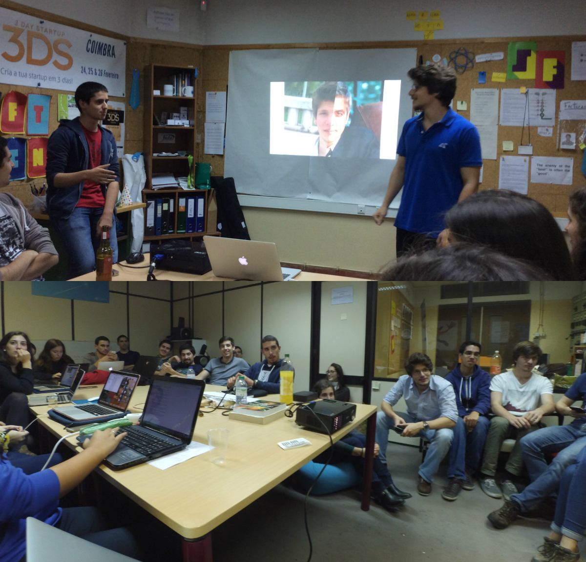

A jeKnowledge foi fundada em 2008 com o objetivo de, através de um conjunto de projetos internos e externos, proporcionar aos alunos dos vários cursos da FCTUC a possibilidade de aplicar o conhecimento adquirido na Universidade no mercado global, tal como a aprendizagem de novos.
A nossa organização conta constantemente com entre 20 a 30 associados, sendo que desde a sua data de fundação já passaram por esta mais de 60 talentos. Alguns deles saíram para criar a suas próprias startups, como a Bundlr e Unplugg. Também é de referir que a jeKnowledge é um dos 7 membros fundadores da JADE Portugal – a federação de júniores empresas nacional.
A nossa posição priviligiada enquanto Júnior Empresa permite-nos oferecer aos nossos parceiros vantagens únicas, como ajudá-los a contratar os melhores, a colocar as pessoas certas nos locais certos. Somos ainda um veículo eficaz de marketing e branding no meio em que nos inserimos.
Por tudo isso temos vindo a desenvolver parcerias, sendo a mais notória destas o ineo. Mais que um blog, é uma marca de empreendedorismo para Coimbra e Portugal, implementada online nas redes, e offline através de eventos direccionados a jovens com ideias ou vontade.
Estamos sempre em busca de novas sinergias que tragam mais valias para ambas as partes, portanto se acha que temos objectivos comuns ou complementares, contacte-nos. Juntos podemos fazer a diferença através de parcerias win-win.
Na jeKnowledge damos muita importância à nossa cultura de startup. Temos uma equipa ambiciosa e exigente, que não se contenta com a formação base dos seus cursos, sempre ansiosa por aprender, praticar, fazer.
Fazemos todos os possíveis para fomentar a criatividade e boa disposição dos nossos associados: na nossa organização estamos sempre abertos à discussão de novas ideias, e fazemos os possíveis para que todos trabalhem naquilo que mais gostam. Em parte, isso pode-se verificar pela nossa estrutura, que pretende diminuir ao máximo a distância entre os vários associados.
Com a jeKnowledge os nossos associados não procuram receber dinheiro, preencher currículos, ou serem a nova estrela dos média. O nosso principal objetivo é aprender, e é durante o processo que isso acontece. Tudo o resto são subprodutos.
Para nós, fazer mais do mesmo não nos dá gozo. Nós gostamos de fazer diferente, seja completamente novo ou modificando algo que já existe. Toda a nossa cultura e estrutura organizacional está feita para fomentar ao máximo a criativade dos nossos associados, estando nós sempre abertos para discutir qualquer nova ideia.
Integridade consiste em tratar todas as pessoas pelo mesmo conjunto de valores, em fazer o que devemos em vez do que o que podemos, em fazer o que é correto quando ninguém está a ver. Só assim podemos trabalhar numa organização onde cada membro sabe o que pode esperar do outro, e onde o cliente sabe o que esperar da organização.
Para nós não se trata de uma buzzword, mas sim de uma atitude. Apesar de sermos constituídos apenas por estudantes, nós acreditamos naquilo que sabemos fazer. Tudo é levado a sério, como em qualquer boa empresa. Mas acreditem que não nos deixamos de divertir por isso.
Na jeKnowledge é simples: nós queremos fazer coisas. Nós temos uma vontade constante para construir, e acreditamos que é a fazer que aprendemos. Por isso é que restringimos o planeamento ao mínimo, e ação ao máximo.
A jeKnowledge é uma júnior empresa constituída por estudantes da FCTUC, e que tem atualmente mais de 20 associados ativos. Contudo queremos continuar a crescer e a providenciar oportunidades de aprendizagem aos alunos da FCTUC. Assim, e sobretudo para responder à nossa constante procura de pessoas extraordinárias, talentosas, com ânsia de aprender e espirito inovador, abrimos todos os anos o nosso Recrutamento.
Para saberes o que precisas de fazer para te juntares a nós visita já a nossa página de recrutamento e habilita-te a fazer parte desta aventura!
A nossa equipa dá-vos as boas-vindas!
Na jeKnowledge gostamos de fazer coisas de que nos orgulhemos, e damos o nosso máximo para que isso aconteça. Nada é feito para desenrascar. Contudo, também não nos deixamos levar pelo “aperfeiçoamento infinito” – nós queremos entregar. Gostamos de ser os artistas com orgulho de assinar o quadro, mas que não querem que ele fique para sempre guardado na gaveta.
Não temos problema em partilhar informação sobre a nossa organização, dentro ou fora desta. Sejam documentos, informação sobre projetos passados ou o até mesmo o nosso saldo bancário. Fazemos isto não só porque achamos que não temos nada a esconder, como achamos que é criando uma comunidade aberta à partilha e troca de boas práticas que surgem sinergias. Contudo, não queremos dizer que não existem barreiras sobre o que podemos divulgar, especialmente quando o é requisitado por um cliente.
Não gostamos de abanar bandeiras e cartazes para fazer acreditar que aquilo que fazemos é bom. Gostamos sim de deixar os nossos projetos mais alto, e usá-los para mostrar aquilo que somos.
Sem trabalho de equipa não existem boas organizações, empresas ou júniores empresas. Apenas com o trabalho de equipa e as sinergias criadas conseguimos fazer com que o todo seja superior à soma das partes. E nós sabemos que, no mundo real, não sobrevive quem apenas sabe trabalhar sozinho.
Numa organização é claro que todos têm que ter alguma ambição. Todos querem ser um pouco melhores hoje do que aquilo que eram ontem. Mas numa Júnior Empresa isso é reforçado uma vez que é por isso que fazemos parte deste projeto, é esse o nosso objetivo. Porque queremos aprender, todos os dias, para crescermos e fazer algo de que nos orgulhemos.
Apesar de sermos uma júnior empresa de base tecnológica, os nossos serviços têm evoluído continuamente e de forma sustentada, permitindo-nos atuar num variado leque de áreas. Assim, para além dos projetos internos que nos permitem desenvolver competências em novas áreas, e proativamente procurar soluções para problemas e oportunidades observadas, oferecemos um conjunto de serviços testados e consolidados pela experiência.
Alguns desses servições envolvem Engenharia de Software e Electrónica, Formações, Workshops, Marketing e Comunicação, Consultadoria, Desenvolvimento de Websites, Design Gráfico e até mesmo Edição de Vídeo
Quando o trabalho é muito...
Falaram em água? #hidrataçãosempre
JK labs faz parte da divisão da tecnologia e é um workshop interno, ou seja, é dado apenas para os membros da jeKnowledge, focando-se mais em atividades relacionadas com o hardware.
O crescimento da jeKnowledge não se deve apenas aos nossos clientes e projetos, o nosso crescimento passa pelas pessoas com quem trabalhamos e que aqui conhecemos.
Ou numa noitada a fazer uma app, ou numa ida a Lisboa para uma conferência de empreendedorismo – estamos juntos nalguns dos momentos mais importantes da nossa formação. Como júnior empresa procuramos malta com vontade de fazer amizades e de conviver com pessoas que partilham a vontade de aprender mais.
Por tudo isto, o nosso recrutamento é extremamente importante e define o futuro da júnior empresa. São as pessoas que fazem a jeKnowledge e quem entra dita o espírito dos próximos anos. É este espírito que define o trabalho que realizamos como júnior empresa.
Apostamos no nosso tempo conjunto, em atividades de team building e jantares. Todos nós temos objetivos semelhantes, mas maneiras diferentes de alcançá-los, aprender uns com os outros torna esse caminho mais simples.
Os antigos membros da jeKnowledge são uma fonte de aprendizagem, e contamos com a sua experiência para nos tornarmos cada vez melhores. Damos valor ao relacionamento e aprendizagem mútua entre os alumni 1 e os atuais membros.
Com a ajuda de mentores experientes na área, tu e a tua equipa têm 48 horas para desenvolver uma App usando a vossa linguagem de programação preferida. No fim, o trabalho desenvolvido é apresentado a um juri e é escolhido um vencedor.
A jeKnowledge entra neste evento como sendo um dos organizadores e principais promotores do evento.
Para saberes mais, visita já o website.
A pedido do DUX da Universidade de Coimbra, a jeKnowledge comprometeu-se a fazer um website e uma aplicação mobile que pudessem dar a saber aos alunos desta Universidade se podia haver praxe ou não. O resultado pode ser visto em PraxeUC
.Aqui trabalha-se com estilo...
Aqui a aprendizagem é constante! No Everyone Is A Teacher um dos membros da jeKnowledge apresenta um tema à sua escolha a toda a equipa.
Todos os membros que por aqui já passaram não são esquecidos! No Wall of Fame estão algumas das pessoas que mais marcaram a jeKnowledge.
É essencial que haja um bom ambiente entre todos, para trabalhar em equipa é importante sabermos lidar uns com os outros. Neste sentido, existem os Team Buildings, atividades que fazemos regularmente, sejam estas jantares ou uma noite passada a jogar jogos em grupo. Desta maneira conhecemo-nos melhor uns aos outros e é uma boa oportunidade para trocarmos ideias, experência e conhecimento.
Um AGOGE tem como principal objetivo transmitir experiências intimamente ligadas à atividade empresarial - como a comunicação, organização, estratégia. São então organizados seminários com profissionais especialistas na matéria que ajudam principalmente os membros mais recentes a adquirir novos conhecimentos nessa área.
Organizamos regularmente workshops (como por exemplo aprender a criar o teu 1º videojogo), estes são direcionados para toda a comunidade estudantil incluíndo os nossos membros. Consideramos ser uma boa iniciativa, afinal de contas o saber não ocupa lugar!